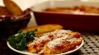

Manicotti

Description
This exciting dish is a favorite in italy.
With the ingredients listed below you can
feed a whole family!
Ingredients
- 1 pint part-skim ricotta cheese
- 8 ounces chredded mozzarella cheese
- 3/4 cup grated Parmesan cheese
- 2 eggs
- 1 teaspoon dried parsley
- salt to taste
- ground black pepper to taste
- 1(16 ounce) jar spaghetti sauce
- 5(1/2) ounces manicotti pasta
Steps
- Cook manicotti in boiling water until done.
Drain, and rinse with cold water.
- Preheat oven to 350 degrees F(175 degrees C)
- In a large bowl, combine ricotta, mozzarella, and
1/2 cup Parmesan, eggs, parsley, and salt and pepper.
Mix well.
- Pour 1/2 cup sauce into an 11x17 inch baking dish.
Fill each manicotti shell with 3 tablespoons cheese
mixture, and arrange over sauce. Pour remaining sauce
over top, and sprinkle with remaining Parmesan cheese.
- Bake 45 minutes, or until bubbly.
Return to homepage